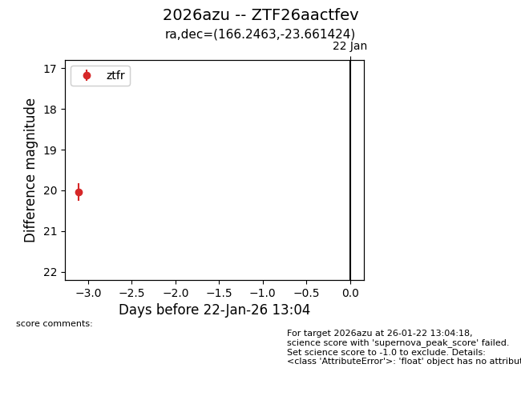
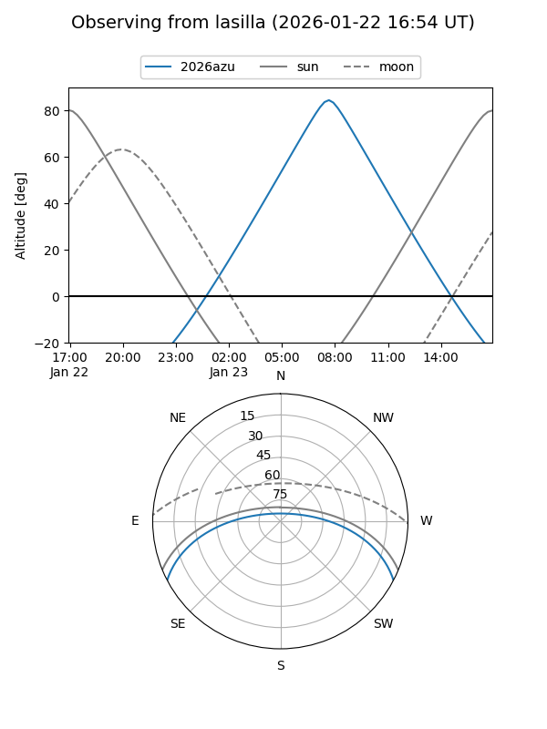
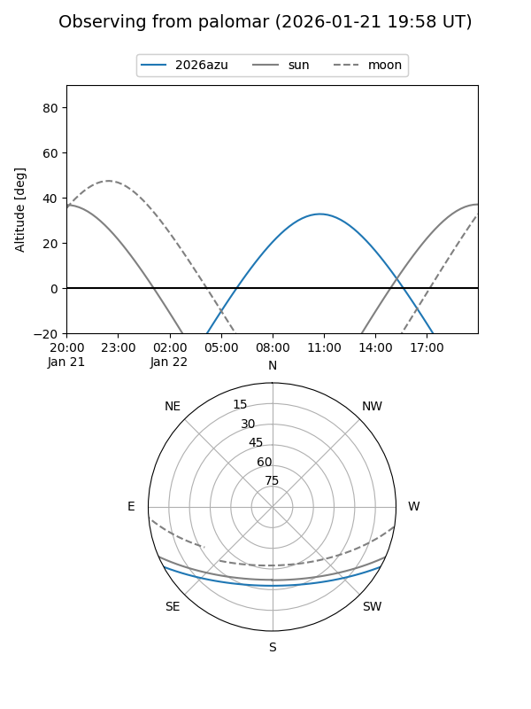

2026azu
Target 2026azu at 2026-01-22 13:06
Aliases and brokers:
FINK: link
Lasair: link
ALeRCE: link
TNS: link
YSE: link
alt names
ZTF26aactfev (ztf,fink_ztf)
2026azu (tns,yse)
Coordinates:
equatorial (ra, dec) = 166.2463,-23.66142
equatorial (HMS+DMS) = 11:04:59.12,-23:39:41.13
galactic (l, b) = (273.6127,+33.07955)
Flags:
Photometry:
last ztfr=20.04
1 ztfr detections
Lightcurve

Visibility


Additional plots